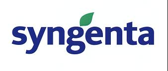

HUPO Proteomics Standards Initiative HUPO Proteomics Standards Initiative
HUPO Proteomics Standards Initiative HUPO Proteomics Standards Initiative The Spring 2004 meeting of the PSI was divided into two halves. For the first two days, members who had been actively involved in the development of the standards over the previous 15 months were invited to work sessions to further develop these schemas. The second half of the meeting was thrown open to all interested parties who were interested in becoming involved in the future development of the various models and tools or in implementing them into their in house workflows.
Introduction Delegates
were welcomed to the opening session by Henning Hermjakob (EBI) who
briefly
summarised the achievements of the PSI since its inception in 2002. The
Molecular Interactions group published the PSI-MI Level 1 XML schema at
the
beginning of 2004 and most of the major molecular interaction databases
are
already offering data in that format. The Mass Spectrometry group have
presented their preliminary PSI-MS mzData interchange format at the
HUPO 2003
congress in
The sessions
then divided
into the 3 work groups
Molecular
Interactions - session chair Henning
Hermjakob (EBI)
The session
started with a
review of the issues raised by the current implementation of the
schema.
Sandra
Orchard – IntAct (Co-ordinator)
Luisa Montecchi – MINT
Susan Moore – BIND
Lukasz
Salwinski –
DIP
John
Armstrong – GSK
·
Exporting
databases should label curated entries with their database ID in the
cross
reference line, importing databases should retain label on import.
·
Additional
attribute to be added to cross reference field to store evidence
codes/qualifiers.
·
GO
to be written
as GO:0000XXX, MI as MI:0000XXX
Mass
Spectrometry – session
chairs Randall Julian (Eli Lilly) and
Weimin Zhu (EBI)
The main aim of
the initial
mass spectrometry session was to demonstrate the mzData format to the
vendors
and take in their feedback. The first decision taken was to extend the
acquisition field to encompass both mass array and intensity array,
both of
which would become mandatory fields. The response from both
instrumentation and
search engine manufacturers was generally good, but tempered with a
warning
that an exponential rise could be expected in the volume of data being
generated by the next generation of high throughput machines which
would
compromise the ability of XML to produce files of a practical volume.
Future
coding will be in Base64 to produce a more compact file size.
Controlled
vocabularies need
to be developed for parameters such as the source, detection method and
analysis with the ability for the development of user controlled
vocabularies
to allow for the specific needs of laboratories and diversity in
experimental
methodology. It was proposed that the existing ASMS vocabulary list be
looked
at in detail in the full session, with a view to updating this and
adopting
this as the data source for the controlled vocabulary. Finally, the
development
of a common output format for MS data analysis was discussed, with
common
syntax being developed to describe peptide and protein identification
and for
detailing post-translational modifications.
MzData is
designed to allow
data sharing and access but will also be an element of the MIAPE model
for
describing a proteomics model.
MIAPE – session chair Chris Taylor (EBI)
MIAPE is being
designed as a
robust, future-proofed standard representation of both methods and data
from
proteomics experiments. It will be a modular expansible model of
primary data
in a format which will allow search, analysis, tool development and
information
exchange. The MIAPE modelling group propose to produce two documents
1.
MAIPE
Principles which will describe the scope and
the purpose of the proteomics model
2.
MAIPE
model – a documented UML model which will map
to an XML schema, with explicit documentation on the capture of both
data and
meta-data and reference implementation.
It is envisaged
that this
model will develop further following publication on the Web site via
the e-mail
list, teleconferences and further meetings.
The Principles
should
include the assessment of appropriate experimentation and design and
allow the
results of different experiments to be compared with the evidence that
was used
to obtain derived data being made clear.
The model will be designed to underpin public data repositories
of
proteomics data both to support the sharing of data between projects
where
different aspects of experimental activities, including reanalysis of
data, is
taking place at multiple centres and to support the description of
composite
data sets to allow benchmarking and comparison. It will also support
the
development of general analytical tools, which can then be made
available to
the proteomics community as a whole.
Delegates at the
open
session were again welcomed by Henning Hermjakob and the session chairs
each
gave a brief overview of the progress made to date and their aims for
the
remainder of the meeting. A presentation on the development of the MGED
model
was then given to the entire meeting, as an example of the analogous
process of
standardisation in the field of microarray technologies.
The MGED
consortium was
formed in 1999 and published MIAME, an informal specification/check
list to be
followed when publishing a microarray experiment in 2001 followed by
MAGE-OM in
2002 which is a formalisation of concepts in MIAME into an
implementation
phase. The MGED Ontology (MO) was derived from the MIAME guidelines and
has
been published in DAML and OIL files to provide standard annotation for
the
annotation of microarray experiments. This is the major document for
data entry
into MGED. As well as allowing the representation of simple concepts,
the
current data model also allows the modelling of more complex
situations. Use
cases drove the subsequent development of formal documented procedures.
Version
2.0 will be published in the near future and will be part of a more
inclusive functional
genomics model, with data specifications encoded within the model
itself. A
common set of support models could be shared with MIAPE e.g. Protocol,
BioMaterial, BioAssay and Audit, providing a roadmap for MIAPE
development and
eventually suggesting that complex experiments encompassing both
genomic and
proteomic data could be described within a single data model.
IntAct –
Henning
Hermjakob (EBI)
IntAct was
initiated in 2002
by 8 partners, co-ordinated by the EBI and funded by the EU as part of
the Framework
5 “Temblor” grant. PSI-MI is the native download format of IntAct with
large
datasets such as the Giot drosophila 20,000 interactions being split
into 2.500
interaction portions. Data can also be searched and downloaded using
Graph2MIF
and it is possible to download local interaction graphs using PSI-XML
format.
Import using PSI-MI is also in place and data exchange with other
databases is
already established (MINT) or planned in the near future (DIP).
MIPS provides
bioinformatics
support for genome analysis. The interaction database contains manually
curated
mammalian data and both manually entered and large scale yeast data. In
order
to accommodate PSI-MI, the current table schema is being revised with
the
eventual aim of MIPS being able to derive PSI-MI files. This fits in
well with
the HOBIT inter-database collaboration currently established in
BioPax - Gary
Bader
(Sloan Kettering Canner Centre)
BioPax is a data
exchange
ontology for biological pathways which currently maintains a curated
list of
104 pathway related resources. An entire pathway is contained in a
single
BioPax record using existing standards, including PSI-MI with which it
is
intended to remain totally compatible. Different preferred
representations can
then be described using BioPax. An ontology has been developed for the
project
using OWL/XML schema. Version 0.5 was released in September 2004 and a
levelled
approached is planned – level 1 will allow the representation of
biochemical
reactions, complex assembly and enzyme and transport catalysis, level 2
will
add binding interactions using PSI-MI and level 3 will bring in genetic
interactions and regulation.
Cytoscape allows
visualisation of the biomolecular networks and is an open-source
Java-based
tool with plug-ins for network analysis.
MINT - Luisa
Montecchi (
MINT has been
restructured
to the basic PSI-structure and controlled vocabularies have been
implemented.
Since MINT uses flat file based input/output tools in the curation
process, a
PSI maker/flattener has been developed which uses a dictionary as a
filter to
remove any data not appropriate for PSI.
Schema Updates
Following a
short
discussion, it was decided that the schema would undergo an annual
update cycle
Month 0: Change to new schema
on master copy
Month –2: Freeze of development schema and
announcement via usual
media
Testing
Implementation
Month
–4.5: Production of new development schema
Month –5: Developers meeting
Month –5.5:
Request changes
frozen
Should a vote be
required at
the developers meeting each organisation currently participating would
be allowed
1 vote, namely IntAct, BIND, DIP, MINT, MIPS, BioPax and, representing
industry, Hybrigenics, Glaxo and Serono with a simple majority
required.
3. Complex
Topology – current schema does not allow this to be accurately
represented. A separate
inferredInteraction field was added inside interaction that handles
topology
and many experiments backing up one interaction, since both of these
are
similar (in that they are both inferred).
4. n : m interactions – although this was
originally
allowed for, the existing schema will not allow BIND to import the
information
required to fully describe an interaction under their database
definition. The specification
will be
adjusted to solve the issues surrounding specifying experimental form
of
participants (e.g. isTagged) for each by separating the experimental
form items
from the participant and moving them to a separate experimental form
section
within the interaction. Each
experimental form will then point to the experiment it is part of.
The current
agreed changes
are extensive enough to require upgrade from Version 1.0 to 2.0 –
projected
release date
Query System – A common web-based query face was
discussed in
which search on a protein AC number will give protein plus interators
(to a
depth of 2/3). Initial technical specifications to be written by MIPS.
The Mass
Spectrometry group
moved on to consider the extension of the controlled vocabulary list,
currently
provided by the ASMS. It was agreed that this needed both adding to and
updating to cover current requirement and all attendees were asked to
contribute to this process. It was agreed that the ASMS would be an
appropriate
expert group to consult on this process and that eventual ownership of
this
list could move to the American Society for Mass Spectrometry (ASTM) to
support
both PSI-mzData and their own raw data standardisation efforts.
mzData is now widely regarded as an acceptable
format for representing mass spectrometry data and will be valuable for
both
data sharing and storage. Once the modifications agreed upon by meeting
are in
place, the schema will be frozen prior to implementation and
publication. Those
vendors who have agreed to be involved at an early stage of the
process, for
example Matrix Science, Kratos
Analytical Ltd
and Bruker Daltronics will experiment with the format to establish
proof-of-concept for spectral and parameter storage. It is also
intended that a
public repository for such data will be available before the HUPO
congress in
October 2004. In the long term, however, it was accepted that peak
lists are
too limiting for most reprocessing and that any archive will be
required to
hold raw data. To that end, it is recommended that the ASTM standard be
used
for full data archiving, when available (2005-2006).
It was agreed
that sample
description, separation and identification should be kept separate. The mzData model will also act as the mass
spectrometry component of the MIAPE data model and alignment with this
must be
kept in mind throughout the development process, for example top line
processes
such as sample identification will be better dealt with by MIAPE than
in
isolation by the mass spectrometry group. The design of specifications
for a
spectral analysis format (mzAnalysis) is now in hand. This format will
require
the development of a common syntax for the identification of proteins
and
peptides and also the ability to describe post-translational
modifications
(mzProtID). Any such format must facilitate both database searching and
the
ability to annotate denovo sequencing and also quantitation of
chromatographic
and spectrometric data. Vendor dependence will be managed through the
use of
ontologies.
 |
 |
|
|